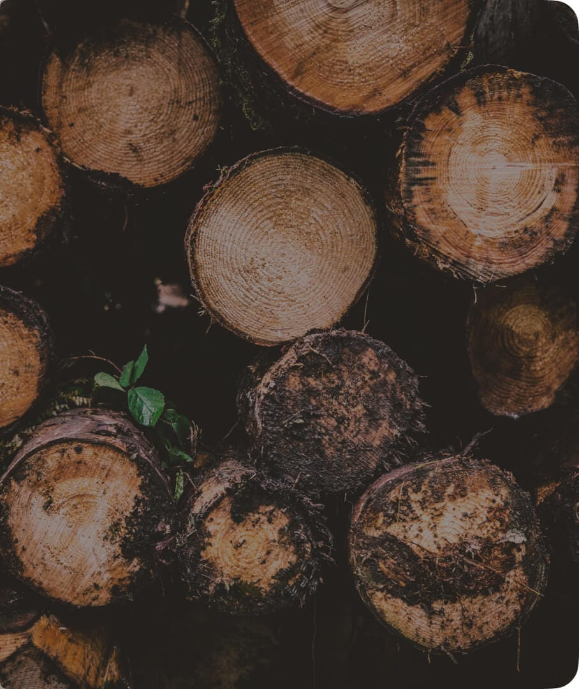

<div class="wrapper error__wrapper">
	<div class="wrapper__background">
		<picture>
			<source media="(max-width: 772px)" alt="ssss" srcset="assets/images/404-lines-mobile.svg">
			
		</picture>
	</div>
	<div class="wrapper__content">
		<header class="header ">
			{{> header}}
		</header>
		<section class="error__section">
			<div class="hero-background__image error-background__image">
				
			</div>
			<div class="error__content">
				<div class="error-width__content">
					<div class="error-number__image">
						
					</div>
					<div class="error-text__block">
						<h2>Woops</h2>
						<p>Oh, you must be lost,there is no such page.</p>
						<button onclick="window.location.href = 'index.html';" class="error__button main-button">Go to the home
							page</button>
					</div>
				</div>
			</div>
		</section>
	</div>
</div>